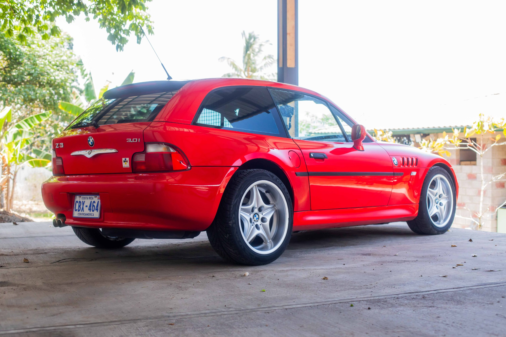
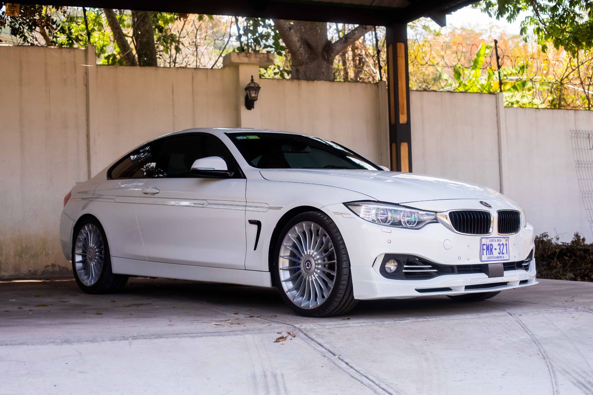
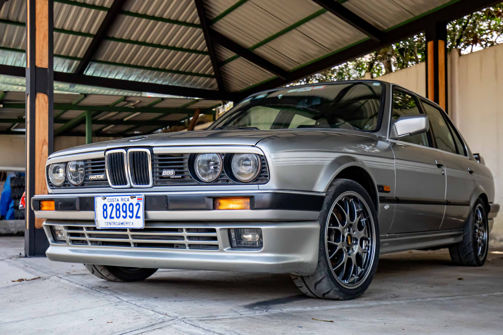
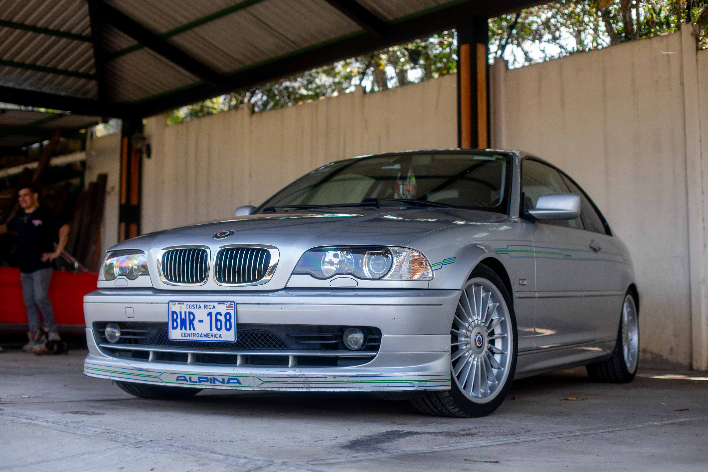

Showroom virtual de autos clásicos restaurados con pasión
Marin Garage nace del amor por los automóviles que marcaron época. Cada pieza ha sido restaurada con detalle, conservando su alma original. Este espacio es una ventana a esa pasión.
Año: Finales de los 70s
Motor: 2.8L I6 modificado
Una joya de ingeniería alemana, restaurado meticulosamente con piezas originales y detalles BBS. Un vehículo con historia y personalidad, ideal para puristas del motor clásico.
Año: Principios de los 2000
Motor: 3.0L I6 atmosférico
El BMW Z3 Coupe es una rareza con diseño shooting brake y alma deportiva. Su manejo ágil, motor potente y carácter poco común lo convierten en una pieza deseada por coleccionistas y entusiastas por igual.
Año: Década de 2010
Motor: 3.0L I6 Biturbo
Una combinación de lujo y potencia, el B4 Biturbo representa lo mejor de Alpina sobre la base del BMW Serie 4. Con acabados refinados, rines icónicos y un desempeño impecable, es un coupé moderno para quienes exigen excelencia.
Año: Finales de los 80s
Motor: 2.6L I6 Hartge
Versión modificada del legendario E30 por el preparador Hartge. Equilibrio perfecto entre rendimiento y estilo con mejoras mecánicas exclusivas.
Año: Inicios de los 2000
Motor: 3.3L I6 Alpina
Este BMW E46 Alpina B3 combina la elegancia del Serie 3 con las mejoras de rendimiento de Alpina. Presenta rines multiradio clásicos, franjas decorativas Alpina y un interior con acabados en madera que reflejan su herencia de lujo y deportividad.
Escríbenos para conocer más sobre los vehículos o agendar una visita privada.
📧 contacto@maringarage.com
📸 Instagram: @maringarage